前言
本讲进入存储系统，介绍存储层次、常见存储介质与直接映射缓存。处理器和存储器共同决定系统的计算与数据访问能力。
（一）对计算机存储架构的认识
1.存储单位
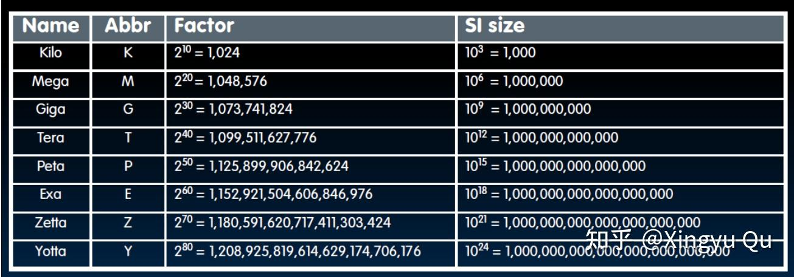
常用的存储计数单位，注意和B的转换，和底数为2、10两种数据的近似转换。
2.局部性原理（Principle of Locality）
在任意一段时间内，程序只会访问到地址空间中相对较小的一部分。
（1）时间局部性：如果某个数据项被访问，那么在接下来一段时间内可能再次被访问。
（2）空间局部性：如果某个数据项被访问，那么相邻的地址的数据项可能马上被访问。
例如：程序中的循环是时间局部性的体现；指令顺序执行是空间局部性的体现。
3.存储架构（Memory Hierarchy）
基于局部性原理，可以建立如下存储层次：
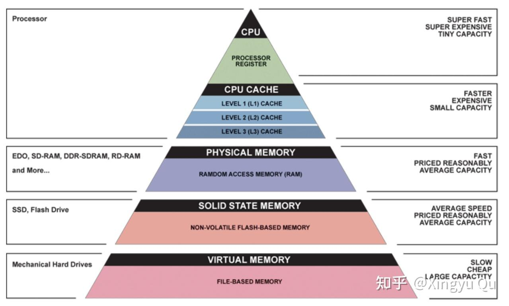
越往金字塔顶，距离CPU物理距离越近，读写越快，成本越高，容量越小。
层次化存储可以由不同的层次构成，但是数据只能在相邻的层次传输（复制）。
在相邻两层信息交换的最小单元称为块（block）或行（line）。
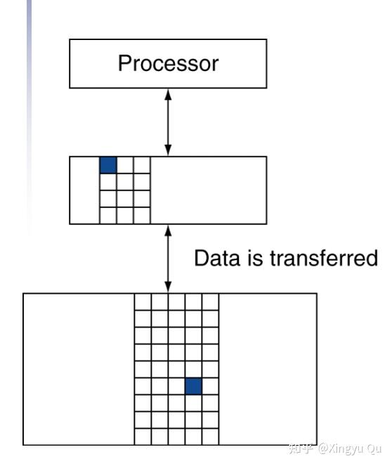
如果处理器所需的数据在本层被找到称为命中（hit），否则称为失效（miss）。命中率（hit rate或hit ratio）指访问命中次数占总访问次数的比例，通常是衡量存储器性能的重要指标。命中时间（hit time）指的是访问本层存储的时间，包括判断访问命中或失效的时间；失效损失（miss penalty）指的是将相应的块从下层存储替换到上层存储中的时间。
（二）存储技术
在当今的层次化存储中主要有四种技术：DRAM（动态随机访问存储）、SRAM（静态随机访问存储）、闪存（flash memory）、磁盘（magnetic disk）。
主存（Memory）采用DRAM实现，而靠近处理器的存储层次（如cache）使用SRAM实现，二者的成本差距较大，主要是因为存储相同的数据，SRAM需要的（硅片）面积更大；此外SRAM访问的速度更快；RAM均为易失性存储。
闪存是一种非易失性存储，通常被用作个人移动设备的二级存储；磁盘常被用作实现服务器上最大最慢的存储层次，下面本讲将一一介绍这些存储技术。
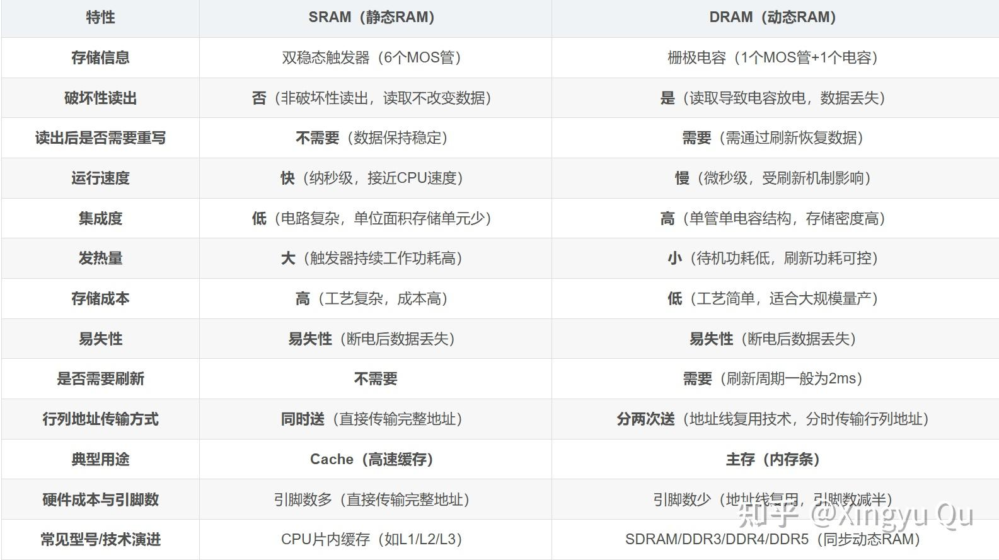
1.SRAM存储技术
SRAM存储是一种存储阵列结构的简单集成电路，通常有一个读写端口，对于任意位置的数据，SRAM的访问时间都是固定的。
SRAM不需要刷新电路，访问时间可以和两次存储访问间隔的周期时间接近。为防止读操作时信息丢失，典型的SRAM每bit采用6~8个MOS管实现。
由于摩尔定律的发展，如今各级cache几乎都用SRAM实现，独立的SRAM芯片市场已经消失。
2.DRAM存储技术
DRAM与SRAM的存储原理不同，它使用电容保存电荷的方式储存数据（读or写）。DRAM仅在单个MOS管上存储数据，比SRAM的密度更高。
由于DRAM在单个晶体管上存储数据，因此不能长久保持数据，必须周期性地刷新。刷新的方式是读取其中的内容并重新写回。DRAM采用两级译码电路，使用读一个周期紧跟写一个周期的方式完成整行刷新。
现代DRAM使用bank的方式组织结构，每个bank包括如干行（row）。发送预充电命令（Pre）可以打开或关闭某个bank。激活（Act）命令发送行地址，并将对应某行的数据传输到缓冲区中。当某行写入缓冲后，可以通过发送后续列地址进行数据传输，或者通过起始地址进行块传输。行结构和缓冲区的设计有效提高了DRAM的性能。
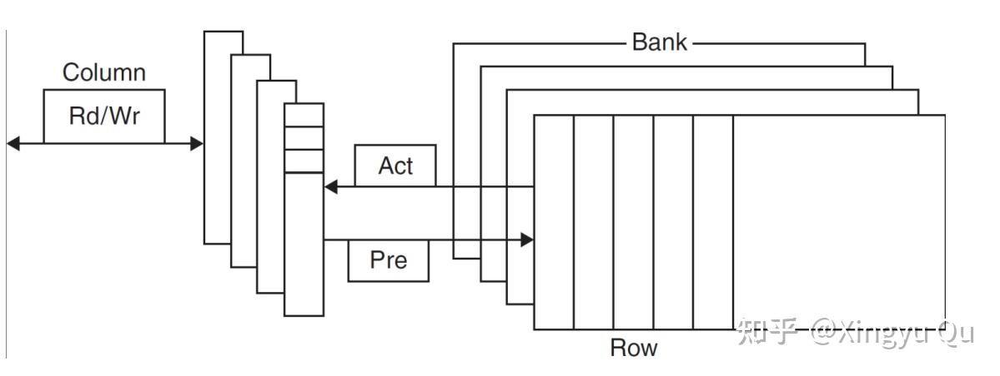
为更好优化与处理器的接口，DRAM添加了时钟，被称为同步DRAM（Synchronous DRAM，SDRAM）。SDRAM的好处在于，使用时钟消除了内存与处理器之间的同步问题。同步DRAM的速度优势来自于，进行突发传输（brust transfer）时无需额外指示地址位，可以通过时钟传递后续数据。
速度更快的结构例如双倍数据传输率（Double Data Rate，DDR）SDRAM，它在上升沿和下降沿都可以进行数据传输；四倍数据传输率（Quad Data Rate，QDR）SRAM，可以在一个周期传输四次数据。
3.闪存
闪存是一种电可擦除的可编程只读存储器。闪存的写操作会对器件本身造成磨损。为了应对这种限制，闪存中会设置一个控制器，用来将多次写的块重新映射到较少被写的块，从而使闪存的寿命更长。
4.磁盘
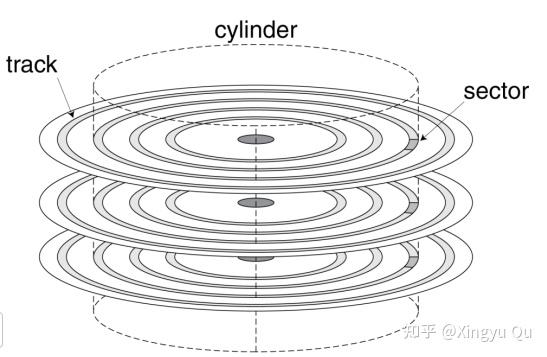
磁盘的结构如上图所示。每个磁盘表面分为若干的同心圆，成为磁道（track）。每个盘面上通常由几万条磁道。每条磁道按序划分为上千个保存信息的扇区（sector）。扇区的容量一般为512-4096字节。记录在磁介质上的内容依次为：扇区号，间隙，该扇区的信息（包括纠错码），下一个扇区的是扇区号等。
每个盘面配有一个磁头，这些磁头互相连接并一起移动。每个磁头都可以读写盘面上的每一条磁道。柱面（cylinder）用来表示磁头在给定点能够访问到的磁道的集合。
操作系统通过三步完成对磁盘的数据访问：
（1）寻道：将磁头定位到正确的磁道上方，这个过程所用时间称为寻道时间（seek time）。操作系统的调度策略和局部性可以减少平均寻道时间。
（2）旋转延时：等待所需扇区旋转到读写磁头下，这段时间称为旋转延时（rotational latency），获取所需信息的平均延时为磁盘旋转半周的时间。rotational latency=0.5/rotational speed
（3）传输时间：即传输数据块的时间（transfer time）。与扇区大小、旋转速度、磁道记录密度有关。此外，大多数磁盘控制器会内置一个缓存，用来保存刚刚读取过扇区的数据，这样会大大降低传输时间。
（三）cache存储原理
cache是位于处理器和主存之间的特殊层次。在前面介绍处理器的章节中，数据通路中的存储都可以被简单替换为cache。
先从一个简化缓存开始：处理器每次请求一个字，每个缓存块也只包含一个字。
下图展示了一个cache的使用实例：当处理器想访问 x_n 时发现cache中不存在此项，会从内存取到cache中。
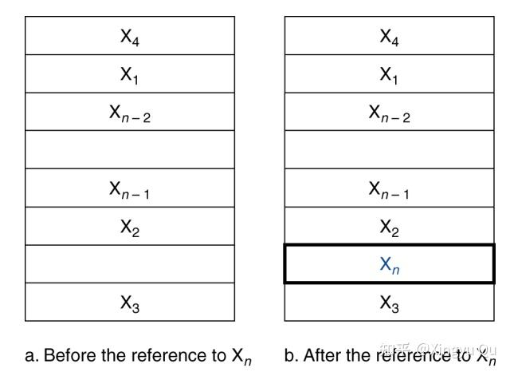
1.直接映射
直接映射的原理是：将数据在内存中的地址直接映射到cache的确定位置。几乎所有的直接映射中cache都可以使用下述映射方法找到对应的数据块：（块地址）mod（cache中的块数量）。如下图所示，Memory中的地址对cache块数量取模，得到后三位二进制，就是对应的cache块号码。
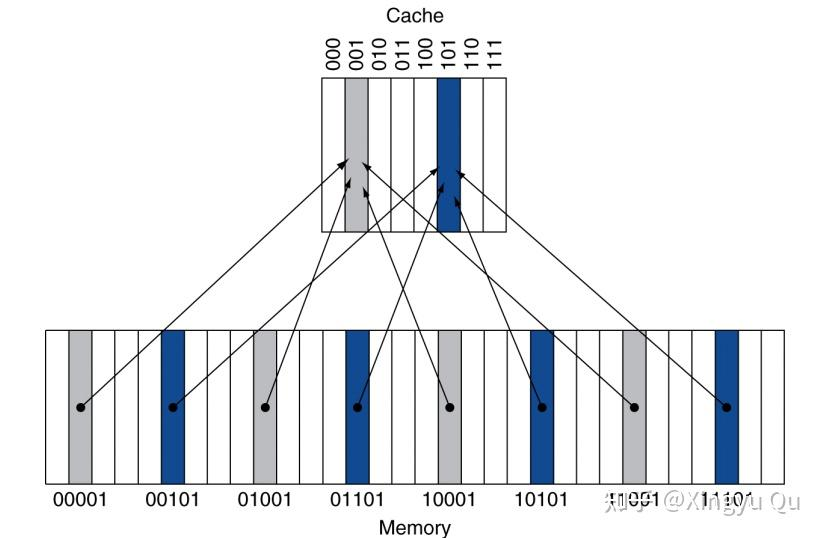
容易看到，memory->cache的映射并非单射，所以cache中不仅要存储对应Memory的数据，还要标记是哪一个Memory块中的数据，即为数据项添加标签（tag）。在上例中，标签即为Memory的高两位地址。
此外，还需要有一种方法能够判断cache中保存的是否为有效数据。例如，当处理器启动时，cache中没有有效数据，标签位就是无意义的，所以需要屏蔽掉这个的cache块，否则可能取到无效的数据。为区分有效与无效表项，每个缓存块增加一个有效位（valid bit）。
综上，cache的存储格式可以如下表示：
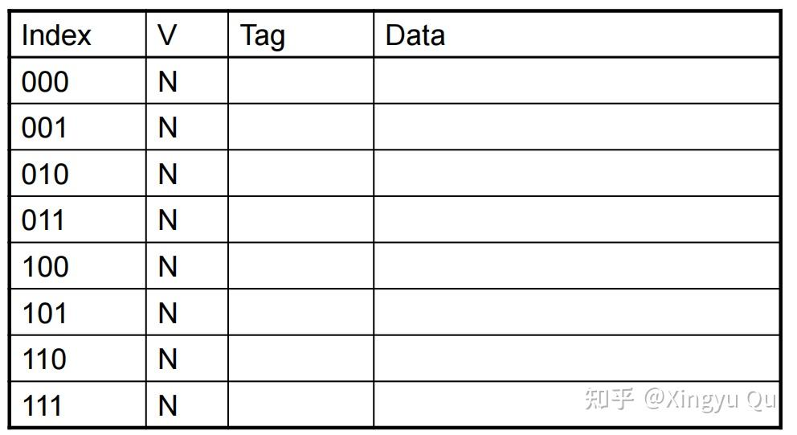
注意，index不是存储的内容，是标记cache块号的索引。图中表示处理器启动时缓存为空的状态。
2.cache访问
对于每一个处理器发出的访存请求，内存地址会被分为标签（tag）字段和索引（index）字段。首先根据index找到对应的cache block，同时判断valid bit，若有效，比对tag，若相同，则成功进行一次hit。如下图：
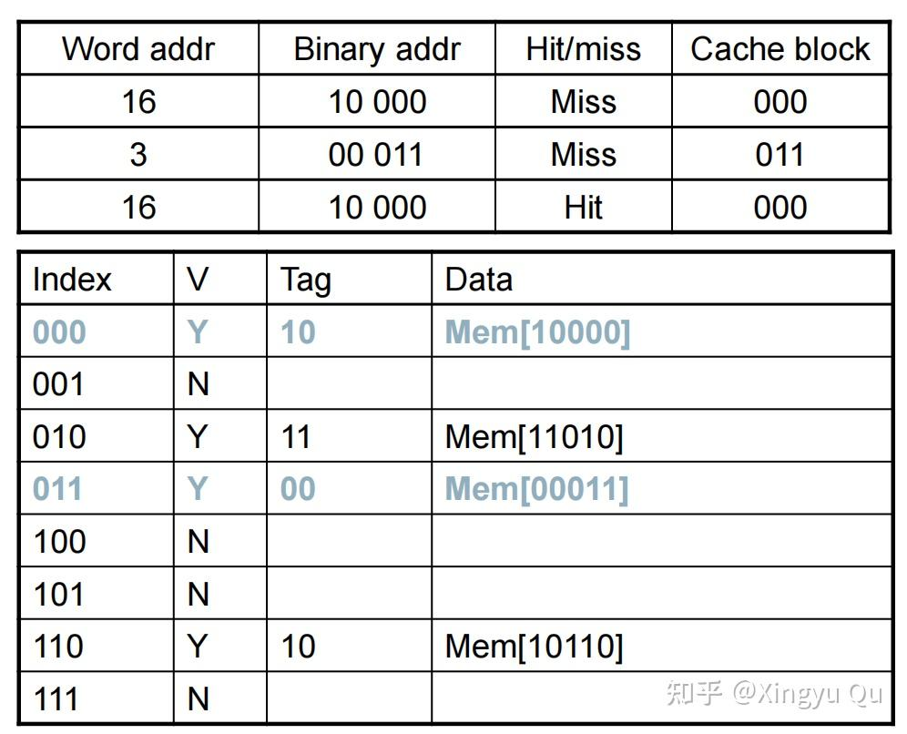
对于相对真实的场景，我们考虑32位地址，1024个cache blocks的情况:
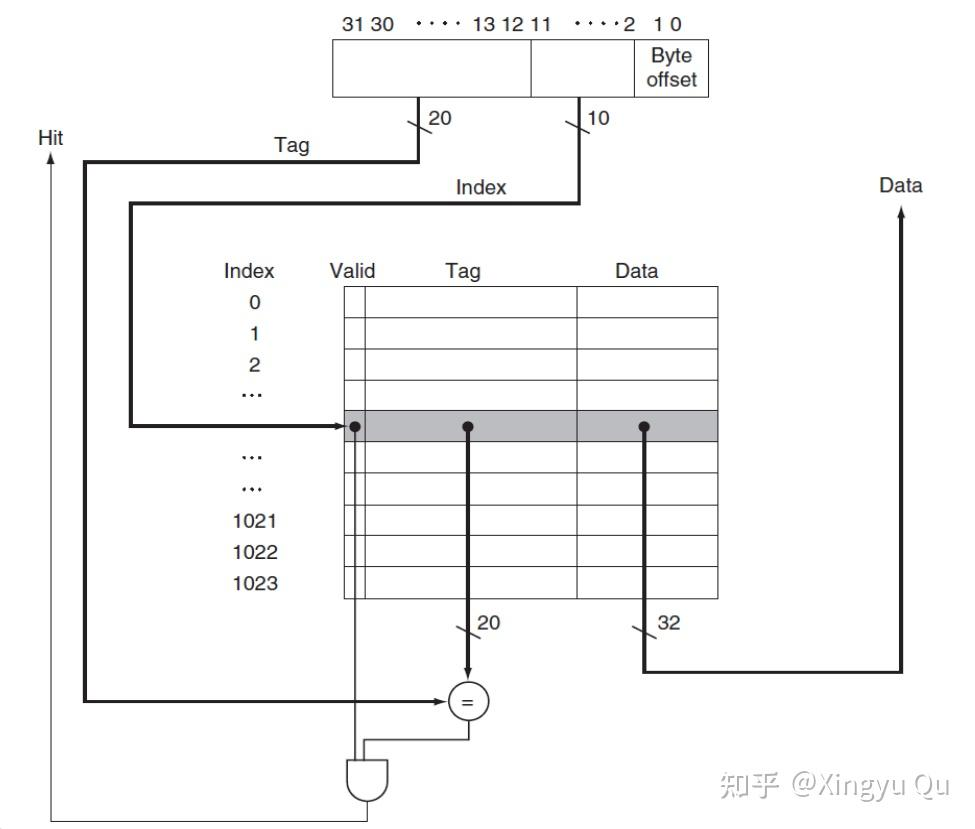
（1）由于假设了每个cache block中存储的是1个字的数据，而一个地址对应存储1个字节（1个字有4个字节），如果存储都是字对齐的，那么在访问的时候最后两位可以忽略不计，作为byte offset。（例如在处理lb这种非访存整个字的情况需要）
（2）1024个cache blocks需要10位二进制作为索引，故[11:2]成为地址中的cache index。
（3）[31:12]自然成为tag，即一个cache block对应 2^{20} 个内存块地址。
注意图中所表示的，valid bit和tag的比较都是在硬件上完成的。
这里我们从实际计算的角度再考虑一个例子：假设有64个cache blocks，一个cache block中存储的data大小为16个bytes，可以求出byte offset的二进制位数为 log_216=4 、index的二进制位数 log_264=6 ，tag的位数自然计算为32-4-6=22。
从以上两个例子可以看出，cache block的大小和数量是两个设计中的变量。如果cache block容量扩大，由于空间局部性，miss rate就会降低；但是在一个cache总容量固定的存储系统中，cache block的容量扩大会导致数量降低，这样会有更多的竞争（race）出现，即一个cache block对应的Memory block增多，miss rate反而上升；增大块容量时另一个更严重的问题是失效损失。失效损失是从下一级存储获得数据块并加载到cache中的时间，显然传输时间会随块容量增大而增大。
总结
本讲介绍了计算机存储架构，各层存储的特点，和cache的存储结构。
下一讲介绍cache的读写：包括cache miss的处理，cache的写操作，从cache到memory到disk的自顶向下的逐层访问模式。